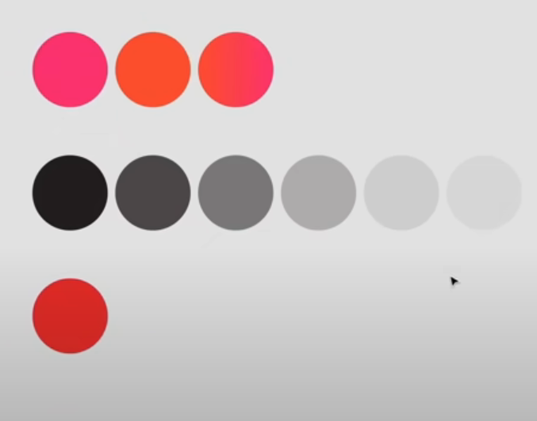
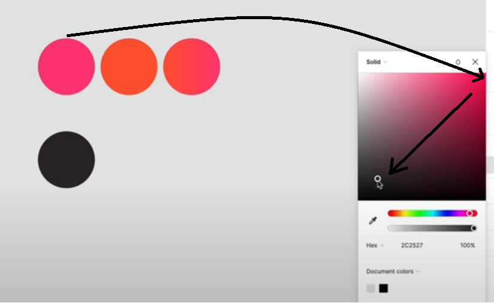
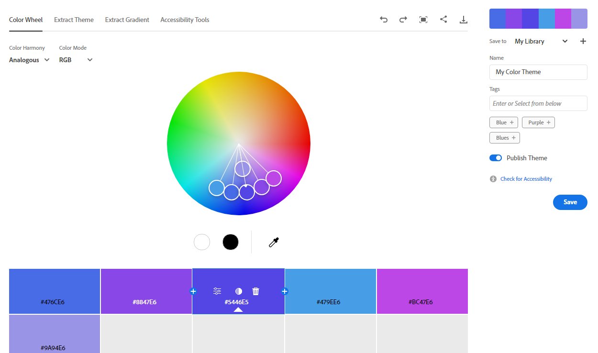
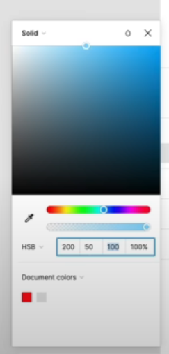
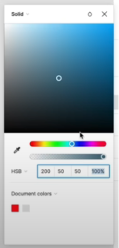

before designing steps
below is a bullet list of just the steps and in the sections after that there will be extinsive explaining on each steps
-
picking the color platte
- primary color
- secondary color
- gradient from the primary to the secondary
- paragraph color
- shades of the paragraph color
- error color
- (this one is just from my opinion) success color
-
picking typography
- the font families
- weights
- paragraph (base) and heading (h1-h6) sizes
- line heights
- spacing and sizing (as far as I understand the 8pt system is the industry standard)
- choosing your icons, and images
choosing colors
of course any color you make you add it in your style as a variable so when you need to modify it you do it from one place
first you start by choosing your primary color, you can pick it either:
- by the website vibes using the color phsycology
- or from a provided theme
- or from the logo
- or from the hero section (on your own or using the theme extract in adobe color)
then you choose your secondary color either by knowing color harmony or using one of these color picking websites and also read the HSB color model
then make a gradient from the main and the secondary color (in case you need it)
then you choose your text color which the instructor in envato tuts+ course called the greys as he made a main black color and made different shades of it but the text color doesn't have to be black (in case of dark theme the text is a light color)
as for the black shades the instructor prefers to make a black from his primary color
and don't use pure black (or white probably) as it provides too much contrast for the eye
or you can put a black overlay over your primary color and reduce the overlay opacity until you get a good tone
then he made the different shades by reducing it's opacity to 75%, 50%, 25%, 10%, 5%
then choose an error message (in case you have elements like forms) which should be a complemntary redish color to your primary one
after choosing your colors don't forget to check on the contrast you can use figma plugins like contrast or stark
color phsycology general guide lines
-
red for passion, grabing attention, getting the message across,
intensity, energy, excitement
often used in sport related websites or websites that want to make a bold statement
-
blue for trust, calm, peace, intelligenece, security
often used by tech brands like facebook and twitter, financial instituations, political parties
-
yellow for fun, bold, joy, happiness, energy
used in entrtainment industry and children's toys
- green for health, welbeing, fertilty, balance, saftey and also used with anything related to landscaping and gardening
- orange for happiness, joy, confidenece, energy, optimizm, communication and it's complementary to blue
- purple for luxury, royality, wealth, sophistication
color picking tools / color harmony
note that a complementary color palette will give you the most contrast while monochormatic will give you the least one
adobe color
the very top bar which has (color wheel, extract theme, extract gradien, accessability tools) are the different tools the website offers and they're really good (the theme extract extracts a color platte from an image you provide)
uner that bar there's the color harmony dropdown menu which in the image says "analogous" and from that drop down you choose from different color matching modes
muzli colors
this is my favourite one so far as it shows you a live preview (once you select a color or search for it) on how the palatte will look like on a ui and it gives you the shades of the color you selected as well (the shades are a little down the page you have to scroll couple a times)
HSB color model
it stands for hue saturation brightness
hue is basically the color itself then saturation is how vibrant (pure) or dull (greyish) the color is and birghtness is how bright (whitish) or dim (blackish) the color is
hue varies from 0 to 360 with every number preseneting a different color
where brightness and saturation vary from 0 to 100
so by varying the saturation you are changin the place of the color point in the color picker horizontally, meaning that a 50 saturation and 100 brightness will but the point exactly at the middle top of the picker
where a 50 saturation with 50 brightness will put in the center of the picker
typo graphy
envato tuts course didn't put specific steps to detect the right font
basically you have to understand the brand and it's end users (and in my opinion see a lot of websites in the field you're designing for)
for example luxurious brands use serif fonts, and tech brands use sans serif fonts to give a feeling of modern and trust
the following is from my experience: as a rule of thumb you shouldn't use more than 2 font families in your website as more than that affects the performance and consistency of the website
after choosing your fonts you set the rule of each font: which gonna be used for headings, which gonna be used for paragraphs, etc...
finally don't forget to check for it's readability (by reducing it's font size down to the smalles value you will be using and see how it does)
now after choosing your fonts you choose their attributes (weights, fontsizes, scale for the headings, line heights)
as for the base font size envato tuts instructor chose 21 explaining that it's a bit larger than usual but that what suits the exact design he was working on in the course and didn't say exact steps on how to choose the base so I made my research
according to learn ui web pages can be categorized into two categories based on the text
-
text-heavy pages: basically any page you keep reading in like
(documentations and articles) the main function of the page for
you is to read
examples: medium.com or tailwind documentation
-
interaction-heavy pages: apps that require alot of clicking,
searching and looking for items
examples: facebook, and instagram
so the general rule is to never go less than 16px one reason for that is inputs with 16px ios browsers will automatically zoom in on the left side of them making having to zoom out manually to conintue browsing normally creating an awful user experience in my opinion
one exception for that rule is when the text is "less important" like a comment on a sentence you can make it 14px or 15px (iphone use 17px base and 15px less important)
so when it comes to text-heavy web pages it's good to use a bigger font size than 16px something like 18px or even 20px (medium.com عمنا وعم المجال uses 20px )

as for interaction-heavy web pages 16px is a very good spot (facebook uses 15px, and insta uses 14px)